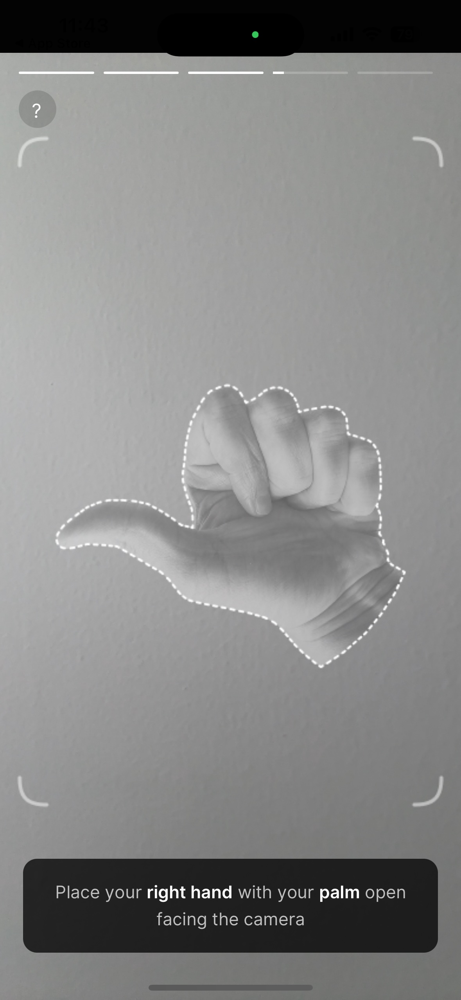
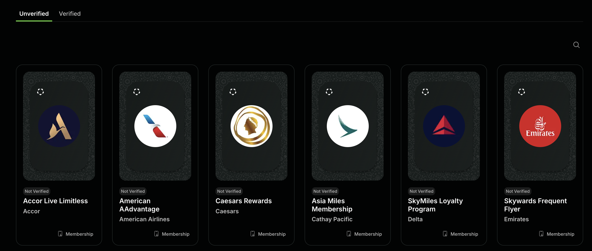
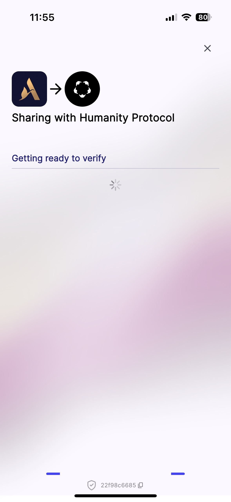

Humanity Protocol 去年 5 月份获得了 3 千万美元的 融资，今年 6 月份上线了主网，并进行了空投，目前空投仍在继续，代币是 $H。
我在看到 Humanity Protocol 的官网和导航栏的时候，对这个项目的技术预期比较低，因为没有白皮书，也没有 GitHub 链接，看文档还等登陆账号，这些信号都在表明，Humanity Protocol 是一个依靠运营、营销、市场、玩法、热点的项目，而不是专注于技术。
来看看主网的 Top Accounts 代币余额情况：
某一个账户控制了整个网络 99.86% 的代币，这可是主网啊。这样的代币分配模式，和区块链技术就已经无关了吧。而且很明显 Humanity Prococol 用的是以太坊节点，地址格式、交易哈希、手续费都是以太坊的格式。不过还不清楚具体是用什么技术方式启动的网络，在浏览器上看到了 Batches 的字样，应该是 L2 吧，那么大概率是 Op Stack。没准是用了某个 BaaS 平台，一键启动，能理解 😒。至少能肯定的是，链不是自己开发的，毫无技术含量。
翻了一下 Humanity Protocol 早期的 博客，原来这个项目早在 2023 年就有想法了，在合伙人中还看到了 Polygon Labs 的身影，这个项目用的应该是 zkEVM Layer-2。
什么是 Proof of Humanity（PoH）？用手机 KYC，手机 App 上的 KYC 信息会对应一个链上身份，这就是 Humanity Protocol 说的 PoH。
首先在官网上面用邮箱或者钱包登陆，你的账户会自动绑定一个链上地址，然后账户状态是未验证。你需要下载一个手机 App 来验证你的身份，这个 App 需要你打开前置摄像头，露脸并且在摄像头上比划一些手势，比如握拳、竖中指等，经过几个动作的验证，你的账户会变为已验证的状态。不得不说手机 App 做的还可以，验证流程是流畅的。
说了这么多，Humanity Protocol 这个项目到底是在干什么？给其他项目提供验证身份的服务！
基于刚才提到的一整套身份验证流程，可以给合作的项目方单独验证一次，账户面板上有罗列很多还未验证的项目：
对于这些项目方而言，Humanity Protocol 最大的作用，就是能够证明你是一个真实的人类，这是一件非常有意义的事情！
Humanity Protocol 会把你的账户信息分享给其他项目！
你一定会担心，Humanity Protocol 会泄漏我的身份数据吗？这是 Humanity Protocol 在重点解决的问题，大意 是用 ZK 生成对身份信息的证明，达到不暴露身份数据也能验证身份的目的。
那么即使分享给其他项目的是身份的证明而不是原始数据，Humanity Protocol 官方的服务器上会储存我们的身份信息吗？
不知道！
Humanity Protocol 在说辞上肯定是，用户数据只保留在本地，绝不会上传到服务器，服务器上的都是一写不可逆的 ZK prove 数据。因为没有开源出代码，我们无法验证这一点。
总之，Humanity Protocol 的立意是好的，利用 ZK 技术能验证用户的真实性。项目最大的风险，或者凡是类似的项目，都必然会遭到隐私数据方面的质疑。相信 Humanity Procotol 把代码开源的那一天，这个问题会真正解决。